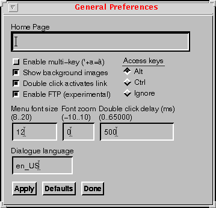
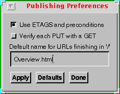
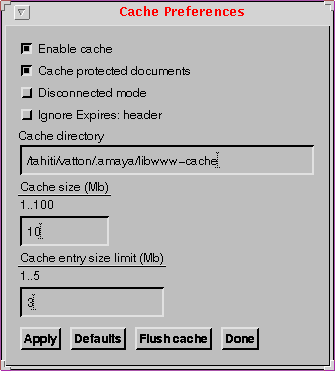
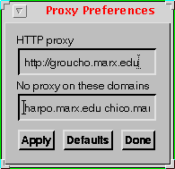
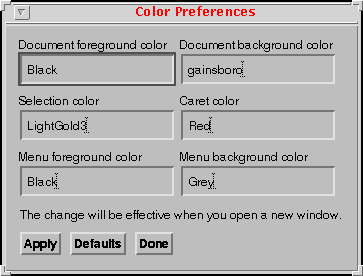
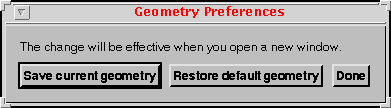
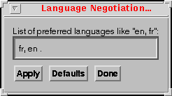
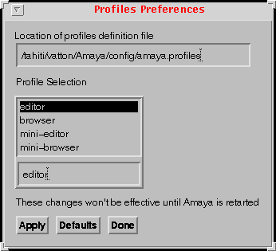

|
|
Amaya uses different configuration files to get initial values for global parameters, dialogs, shortcuts, window size and position, user's style sheet, etc. You can change most of the configuration parameters by means of specific preferences menus. This document gives a walk-through of the different preference menus, then gives more specific information on how to configure the keyboard shortcuts.
This is the directory where most of the default values and all the dialogue messages are stored. The directory's parent is the one where you installed Amaya.
Amaya stores the user preferences as well as other user configuration files in a directory which we call the AmayaHome directory. The following table shows where this directory is stored under different architectures:
| architecture | AmayaHome directory |
| Unix | $HOME/.amaya |
| Windows 95/
Windows 98 |
AMAYA-INSTALL-DIR\users\username
or, if the user didn't login to Windows, AMAYA-INSTALL-DIR\users\default |
| Windows NT | c:\winnt\profiles\username\amaya |
The AmayaHome directory is preserved even when installing new versions of Amaya and may contain the following files:
Note: the amaya.keyboard/amaya.kb and amaya.css files are loaded at launch time. If you change them, you will need to quit and restart Amaya to take them into account.
Amaya stores all the temporary files it creates during its execution in a directory which we call the AmayaTemp directory. The following table shows where this directory is stored under different architectures:
| architecture | AmayaTemp directory |
| Unix | $HOME/.amaya |
| Windows | c:\temp\amaya (default value) |
Amaya creates files in this directory while browsing remote documents or printing a document. The cache is stored in this directory. The user may change both the AmayaTemp and cache directories by means of the General Preferences and Cache menus.
Amaya always tries to delete all the temporary files it creates. However, if Amaya crashes, the temporary files will not be deleted. This will not impact subsequent executions of Amaya.
These menus are found under the Special/Preference menu. There are five different preference menus available: general, publishing, cache, proxy, colors, geometry, profiles, and templates. In all of these menus, we find three common action buttons:

c:\temp.http://www.w3.org.en_US). At
the present time only three alternate languages are available: English
(en), French (fr), and German
(de). When launched, Amaya loads dialogue files according
to the current dialogue language: en-, fr-, or de- files. These dialogue
files are located in the Amaya/config directory.
In Thot, a document is specified according to a schema. In Amaya, the
dialogue messages that are displayed when parsing a document or when
saving it under a specific schema are located in the
Amaya/amaya/HTML.code file, where the
code suffix is a language abbreviation (e.g. en or
fr). This file has 4 sections:
It is possible to adapt Amaya to new ISO-Latin-1 languages by writing corresponding dialogue files. These dialogue files have to be located in the same directory (i.e. Amaya/config) and must use the correct ISO 639 code as a prefix (it- for Italian, de- for German, etc.). The specific HTML.code file also has to be created.
The optional input method (Multi-Key) is based on a two key sequence beginning with the "accent" followed by the "letter". For example to obtain a 'ã' first press '~' then type 'a'. To obtain a '~' you have to press '~' twice. The table below gives available key sequences:
| accent-letter | ~ | ` | ' | " | * | ^ |
| a A | ã Ã | à À | á Á | ä Ä | å Å | â Â |
| c C | ç Ç | |||||
| e E | è È | é É | ë Ë | ê Ê | ||
| i I | ì Ì | í Í | ï Ï | î Î | ||
| n N | ñ Ñ | |||||
| o O | õ Õ | ò Ò | ó Ó | ö Ö | ø Ø | ô Ô |
| u U | ù Ù | ú Ú | ü Ü | û Û | ||
| y Y | Ý | ý Ý | ÿ |

www.w3.org groucho.marx.edu.
Amaya provides a cache through libwww. By default, the cache is enabled by default and is stored in the AmayaTemp/libwww-cache directory. This menu also provides a Flush Cache button, for erasing the cache directory.

You can specify a proxy and a set of domains where the proxy should or shouldn' t be used by means of this menu.
groucho.marx.edu
declares a proxy called groucho.marx.edu running at the default port 80, and
groucho.marx.edu:1234
declares a proxy called groucho.marx.edu, running at port 1234
harpo.marx.edu zeppo.marx.edu chico.marx.edu
^--------------^----> space separated entries
Use the switch buttons to specify if the proxy should or shouldn't be used with this domain list.

This menu allows you to change the foreground and background colors for the document. The Unix version also provides entries for changing the menu colors. To change menu colors under Windows, you will need to use the standard Windows configuration control, found in the Control Panel directory.
Note: the color changes will be effective when you open a new document window or when reloading a document.
Under Windows, you can select colors by means of a color palette. The Unix interface is a bit clumsy for the moment and you have to type in the color name. If you type an invalid color name, the default colors will be used instead.
Setting or changing colors for links, visited links, and active links is done through the Amaya.css style sheet.

This menu allows you to save the current window size of the different views of a document (formatted, structure, alternate, links, and Table of Contents.) or to restore the default values. Note that the values that are saved are those belonging to the views of the document where you called this menu. Also, note that the position of the windows on the screen isn't saved yet. These changes will be reflected when you open new document windows.

If a document exists in different languages and your server is configured to do language negotiation, you can use this menu to enter your language preferences (first one has the highest priority). Try browsing this press release, which exists in French, English, and Japanese versions. By changing the language negotiation to the ISO codes for the above languages (fr, en, or ja you can transparently request any of these versions.

In Amaya, a profile defines the look and feel of of the Amaya user interface. You can use profiles to hide or display the Amaya buttons and menus. This menu allows you to choose a given profile definition file and select among any of the profiles proposed by that file. Amaya proposes four sample profiles: editor, mini-editor, browser, mini-browser, each one with different capabilities. Any profile change will be effective upon the next launch of Amaya.

A template is a model, or skeleton, of a document that you
may use for creating your own documents. This menu allows you to specify the
URL of a template server, which may be either local to your station or stored
in some server. You'll need to quit Amaya to validate this option. When you
launch Amaya again., there will be a new File/New/From Template
entry. Following this entry will open a new document showing you the results
of browsing the template URL. The idea is that this page acts as an index to
the templates available in your station or in the template server. A sample
template server is available at http://cgi.w3.org/cgi-bin/createform.pl.
For more info, browse the using templates with
Amaya page.
It is useful to be able to invoke menu commands directly from the keyboard. The Thot toolkit provides a facility that lets user accomplish this by means of an application keyboard shortcuts file. This file defines a list of associations between a keyboard sequence and the corresponding invoked command.
The syntax used to define an association is:
Directive = KeySeq ':' IdentCommand ;
KeysSeq = KeySet [ ',' KeySet ] ;
KeySet = [ Modifier ] [ 'Shift' ] Key ;
Key = '<Key>' KeyValue / '<Key>' SpecialKey ;
Modifier = 'Ctrl' / 'Alt' / 'Meta' ;
KeyValue = 'a' / 'b' / ... ;
SpecialKey = 'Escape' / 'Delete' / 'Space' / 'BackSpace' /
'Enter' / 'Up' / 'Down' / 'Left' / 'Right' /
'Home' / 'End' / 'F1' / ... / 'L1' / ... / 'R1' / ... ;
IdentCommand = 'TtcInsertChar(' Char ')' / NAME '()' ;
Char = KeyValue / OctalValue ; OctalValue = '\' NUMBER ;
For an example, see the standard files amaya.keyboard (for
Unix platforms) and amaya.kb (for Windows platforms), which are
by default located in the directory Amaya/config.
The list of available commands is:
File menu:
Structure menu:
Links menu:
Views menu:
Style menu:
Special menu:
Help menu: